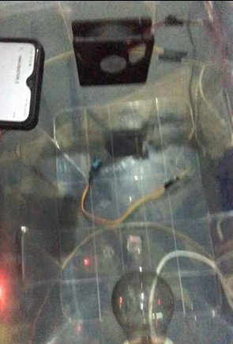

Projek Saya
Project 1: Intellgent Electronic Speed Cotroller dengan dukukan Artificial Intellligence of Things (AIoT)
Menciptakan sebuah inovasi yang terbarukan pada salah satu komponen pesawat terbang/UAV yaitu komponen Electronic speed controller. hal yang dikembangkan dari masalah yang pernah di alami yaitu ESC yang sering terbakar ketika pesawat sedang terbang mengakibatkan pesawat tersebut mengalami kecelakaan. ESC yang devlopment: ESC yang ada dipasaran belum ada sistem monitoring baik secara offlone atau pun secara online IoT, Belum ada sistem AI yang dapat menentukan kondisi kesehatan ESC. ESC dengan sistem keputusan berbasis artificial intelligece. ESC yang dilengkapi dengan sistem monitoring IoT. Flight Contorller berbais teensy 4.1. GCS berbais web application. ESC yang dikembangkan mampu memonitoring secara real time menggunakan web applicaton berbasis IoT dengan dukungan pengambilan keputusan menggunakan AI.
Project 2: SMART HOME PENGUNCI PINTU OTOMATIS (DOORLOCK)
Tugas Akhir membuat sistem pengunci pintu otomatis yang sudah menggunakan RFID menggunakan KTP jika KTP sudah sesuai dengan pemilik pintu maka pintu akan terbuka. Alat ini bertuan untuk mengantisipasi pencuri agar rumah menjadi lebih aman dan menjadi smart home
Project 3: PESAWAT FLYWING BERBAHAN KOMPOSIT SERAT RAMI
Menciptakan sebuah inovasi di dunia UAV pesawat tanpa awak dengan membuat body pesawat flywing berbahan komposit serat rami tujuannya agar pesawat yang terbuat dari komposit serat rami ini tetap kokoh dan kuat. Ketika pesawat itu jatuh maka pesawat akan tetap kokoh dan tidak hancur. Mengapa membuat pesawat dari komposit serat rami? karena pertimbangan yang sudah dilihat dari pesawat yang hanya menggunakan hardfoam dan carbon ketika pesawat jatuh akan hancur. Maka dari itu menciptakan pesawat berbahan rami ini sangatlah inovatif bagi pencinta aeromodeling
Project 4: FLIGHT CONTROLLER AUTONOMOUS DENGAN KENDALI LQR-JST YANG ROBUST AND ADAPTIF CONTROLLER
Menciptkan sebuah inovasi Flight Controller ini menggunakan mikrocontroller teensy 4,1 memberikan kontroler yang mampu menangani variasi kondisi penerbangan dengan ketepatan dan ketahanan yang tinggi. bertujuan untuk mencapai hasil yang solid yang dapat diuji dan diimplementasikan pada sistem penerbangan outonomus Sebagai bagian dari proyek ini, merancang dan mengimplementasikan kontroler penerbangan autonomus menggunakan pendekatan LQR-JST. Metode ini menawarkan keunggulan dalam ketahanan (robustness) terhadap gangguan dan kemampuan adaptif terhadap perubahan kondisi penerbangan. Mengakumulasi pengalaman sebelumnya dalam pengembangan kendali penerbangan autonomus dan memahami prinsip-prinsip dasar LQR-JST. Selain itu, pemahaman terhadap konsep kontrol robust dan adaptif memberikan kontribusi positif terhadap kesuksesan proyek in
Project 5: EMBEDES SYTEM ALARM
Proyek "Embedded Sistem Alarm Bangun Tidur menggunakan ESP32 dengan Output Buzzer" adalah sebuah inisiatif untuk membuat sistem alarm yang dapat membantu seseorang bangun tepat waktu. Proyek ini mengintegrasikan beberapa komponen, termasuk mikrokontroler ESP32, menggunakan keyped untuk sebagai input mengatur jam yang diinginkan. Terintegrasi dengan waktu NTP secara real time dan buzzer, untuk menciptakan alarm yang dapat diatur waktu dan dihentikan dengan menggunakan tombol
Project 6: MONITORING PENETAS TELUR AYAM BERBASIS INTERNET OF THINKS
Proyek "Monitoring Penetas Telur Ayam Berbasis Internet of Things (IoT)" merupakan inisiatif yang melibatkan penggunaan teknologi IoT untuk memantau dan mengontrol lingkungan penetasan telur ayam. Proyek ini dapat mencakup berbagai komponen dengan mikrocontroller esp 8266, termasuk sensor suhu, kelembaban, yang terhubung ke platform IoT untuk pemantau jarak jauh.
Project 7: ROBOT TRASNPORTER
Membuat robot transporter jenis robot yang dirancang khusus untuk melakukan transportasi barang atau benda dari satu tempat ke tempat lain. Robot-robot ini sering kali digunakan dalam berbagai aplikasi industri dan logistik untuk memindahkan barang atau material tanpa perlunya intervensi manusia secara langsung